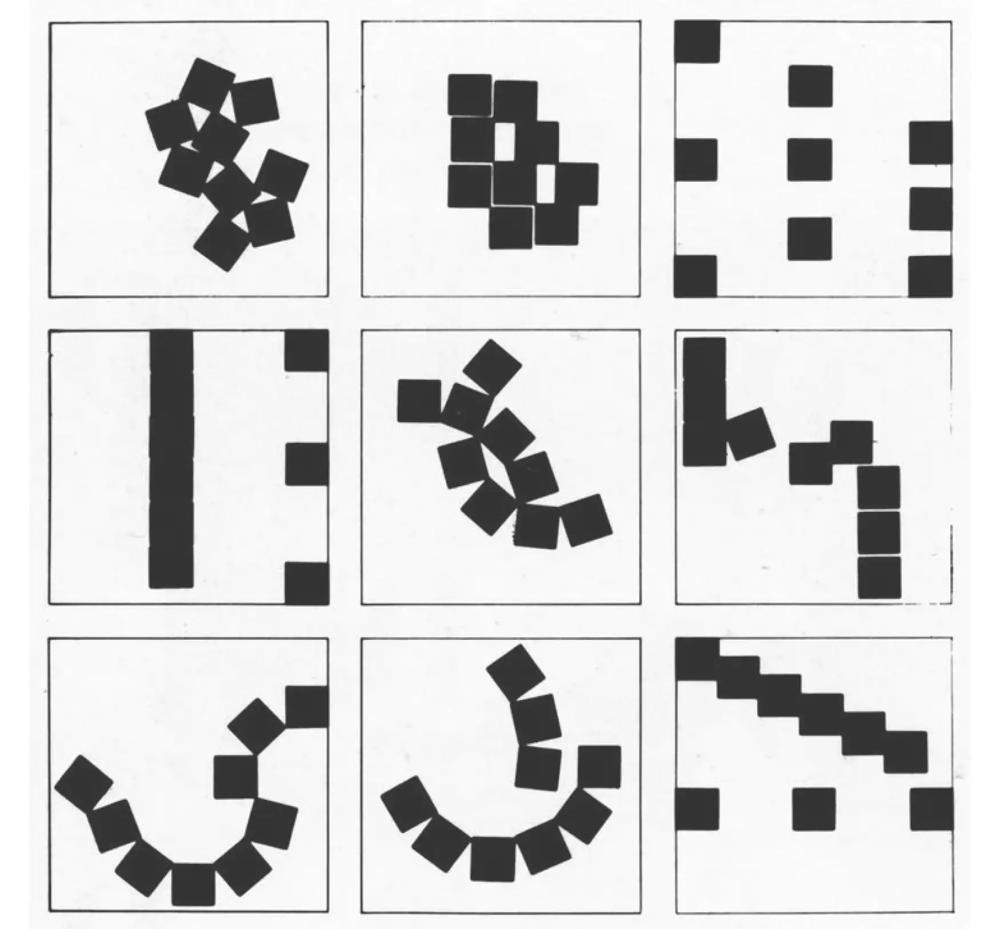
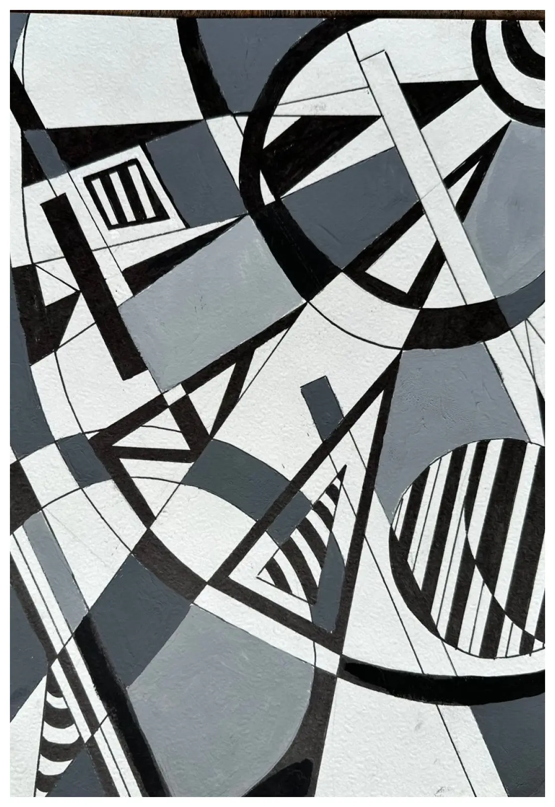
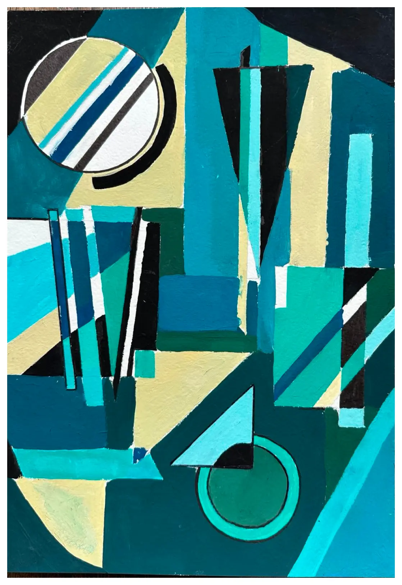

Композиция
Визуальный язык, равновесие, ритм и организация пространства.
Здесь собраны работы, направленные на визуальные эксперименты с точки зрения поиска общего ритма с использованием пятен, линий и цвета.
Визуальный язык, равновесие, ритм и организация пространства.
Здесь собраны работы, направленные на визуальные эксперименты с точки зрения поиска общего ритма с использованием пятен, линий и цвета.


черно-белая

цветная